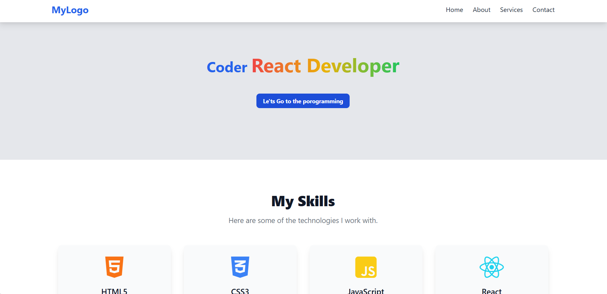
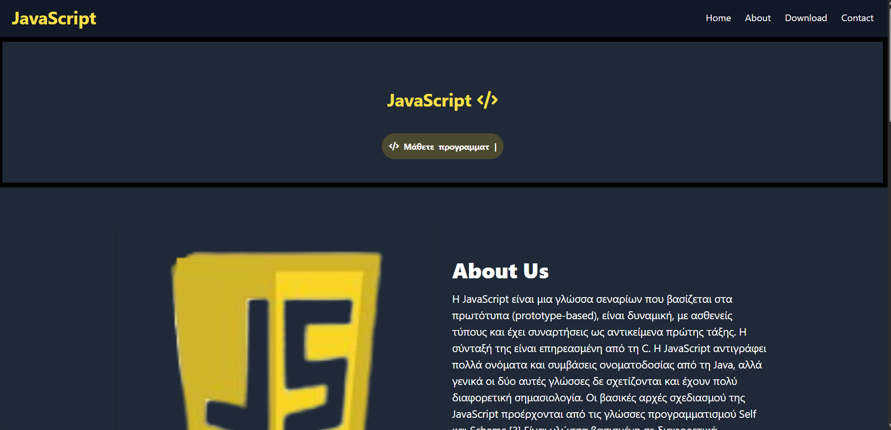

Τα έργα μου

Προσωπική σελίδα Προγραμματισμού
Μια σελίδα που αφορά κυριώς προγραμματιστές γλώσσας React
HTML
tailwindcss
JavaScript
Δοκίμασέ το

Ιστότοπος JavaScript
Σελίδα που αφορά την φλωσα Προγραμματισμού JavaScript
HTML
tailwindcss
JavaScript
Δοκίμασέ το